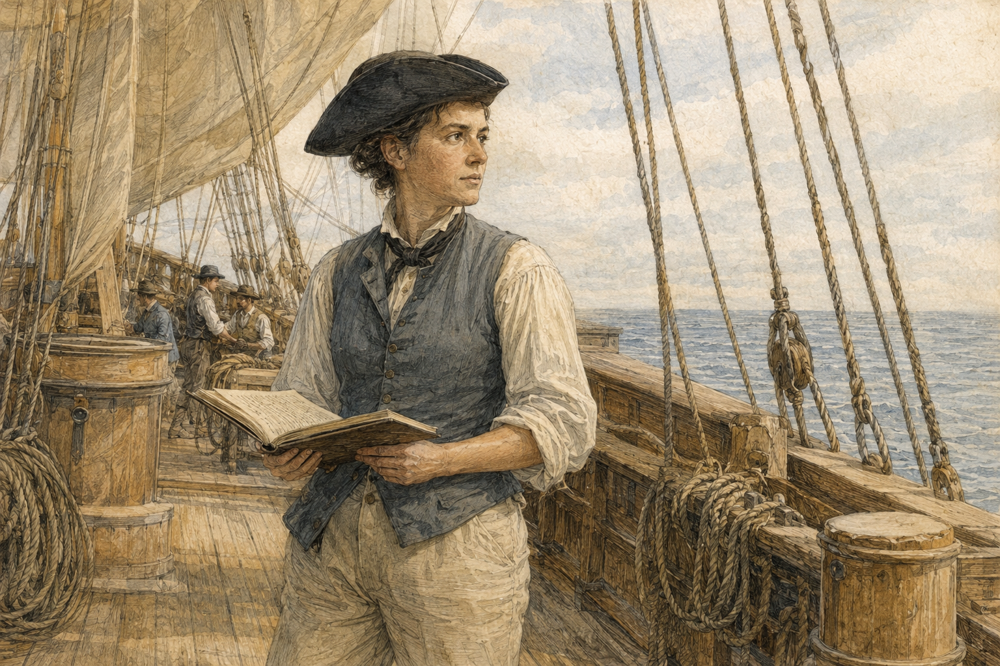

Une femme à bord
Louis Girardin — Marie-Louise Victoire Girardin · 1754–1794

Des bâtiments interdits aux femmes
Au XVIIIe siècle, les femmes ne sont pas autorisées à embarquer sur les bâtiments de la Marine française. Cette règle explique le recours à une identité masculine : Jeanne Baret l’avait déjà fait pour participer au voyage de Bougainville. Dans l’espace clos d’un équipage exclusivement masculin, préserver une telle identité expose à une surveillance quotidienne, aux rumeurs et aux soupçons.
De Versailles à Brest
Fille d’un ancien jardinier royal devenu marchand de vin, Marie-Louise est veuve depuis 1781. Après la naissance d’un enfant hors mariage, elle fuit la colère de son père. À Brest, une lettre l’introduit auprès de Mme Le Fournier d’Yauville, sœur de Huon de Kermadec. Celui-ci facilite son engagement.
Sous le prénom de Louis, elle sert d’abord sur les Deux Frères, puis rejoint La Recherche en septembre 1791. Son emploi de commis aux vivres lui épargne l’examen médical et lui permet de disposer d’une petite cabine séparée. Il semble que d’Entrecasteaux ait connu son secret et approuvé son embarquement.
Les soupçons et le duel
Girardin défend son identité masculine malgré les rumeurs. Les soupçons au sein de l’équipage deviennent suffisamment insistants pour qu’elle provoque en duel un membre de l’équipage qui met en doute son identité. Elle est blessée au bras au cours de l’affrontement.
En Tasmanie, les interrogations des habitants autochtones sur l’absence de femmes parmi les visiteurs contribuent à raviver ces soupçons. Du dimanche 10 au lundi 11 février 1793, alors que les Français rencontrent des Tasmaniens, l’officier La Motte du Portail, à bord de L’Espérance, note dans son journal de mer que ceux-ci ont du mal à croire qu’un groupe aussi nombreux puisse être exclusivement masculin et cherchent à vérifier si c’est exact. Il écrit :
« Cette recherche infructueuse qui s’est répétée à toutes nos entrevues les a laissés dans le plus grand étonnement de ne pas rencontrer de femmes parmi une aussi grande quantité d’hommes. Nous eûmes également par cette occasion de vérifier les soupçons formés depuis longtemps sur le commis aux vivres [Marie-Louise, alias Louis Girardin] de la Recherche qu’on avait lieu de croire une femme. »
Le sexe de Girardin faisait ainsi l’objet de soupçons suffisamment précis pour être consigné dans le journal d’un officier de l’expédition. L’Australian Dictionary of Biography confirme que la curiosité des Tasmaniens quant au sexe des membres de l’expédition et à l’absence apparente de femmes fut remarquée par La Motte du Portail.
Une fin loin de France
Le journal de La Motte du Portail suggère une relation possible avec l’enseigne Mérite. Tous deux meurent de dysenterie à un jour d’intervalle. Duyker situe la mort de Girardin au 18 décembre 1794, à bord du transport hollandais Dordrecht, et rapporte que le chirurgien révèle alors son sexe. Ce récit conserve la trace d’une vie que les règles de l’embarquement avaient contrainte à se dissimuler.
Sources et documents
- Journal de mer de La Motte du Portail, à bord de L’Espérance, Archives nationales de France, MAR/5JJ/13/A/126 ↗
- Edward Duyker, « Marie-Louise Victoire Girardin », Australian Dictionary of Biography, 2005 ↗
- Western Australian Museum, Journeys of Enlightenment, « Louise Girardin » ↗
- Danielle Clode, In Search of the Woman Who Sailed the World, Picador Australia, 2020.